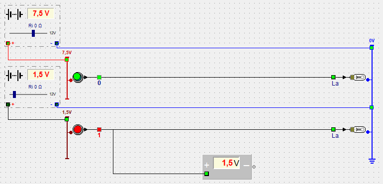

Leerpad › Les 10 van 27

In de vorige lessen kwam de voeding onzichtbaar uit de achtergrond. Hier maak je ze zichtbaar met een voedingskring:
De bovenste bron staat op 7,5 V, de onderste op 1,5 V. Elke bron voedt haar eigen + rail; de − rail delen ze.
De voltmeter hangt aan de draad van de onderste drukknop en meet de spanning tegenover de massa: 1,5 V. Toch blijft de lamp uit. Een logische ingang werkt pas vanaf ongeveer 2 V: daaronder telt het signaal als “uit”.
Zoek met de schuifregelaar de laagste spanning waarbij de onderste lamp nog brandt. Wat gebeurt er als je de draad tussen de − klem van een bron en de − rail verwijdert?
Vanaf 2 V brandt de lamp; bij 1,5 V en lager niet. Zonder de draad naar de − rail is de kring niet gesloten: de + rail van die bron valt op 0 V en wordt grijs, en de drukknop op die rail werkt niet meer. Er kan geen stroom lopen zonder een weg terug naar de bron.